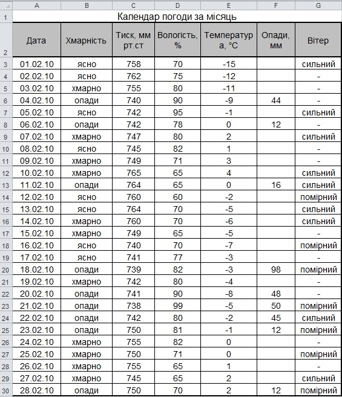
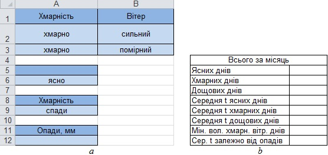
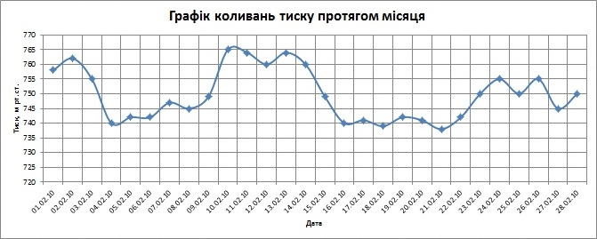

Практична робота 5.2
За таблицею, яка містить дані спостереження за погодою протягом місяця (рис. 5.62), необхідно визначити:
- кількість ясних, хмарних та дощових днів;
- середню температуру ясних, хмарних та дощових днів;
- мінімальну вологість у хмарні вітряні дні;
- середню температуру в дні, коли кількість опадів була меншою або більшою за введену користувачем величину.
Крім того, потрібно побудувати графік коливань атмосферного тиску за місяць.

Рис 5.62. Дані спостереження за погодою протягом місяця
Рис 5.62. Дані спостереження за погодою протягом місяця
Хід виконання
- Створіть електронну таблицю за наведеним на рис. 5.62 зразком і збережіть її у файлі Практ_5_2.хlsx або просто відкрийте цей файл (він є в заготовках до вправ).
- У клітинках І1:J12 створіть критерії відбору днів, а нижче — таблицю для занесення результатів обчислень (рис. 5.63). Щоб не припуститися помилок, назви стовпців у критеріях не вводьте вручну, а копіюйте з заголовку основної таблиці.
- У клітинку справа від напису Ясних днів уведіть формулу для обчислення кількості ясних днів =DCOUNTA(А2:GЗО;А2;I5:І6). Тут А2:G30 — вся таблиця, А2 — заголовок стовпця, у якому шукатиметься кількість не порожніх клітинок (це може бути й інший стовпець), I5:I6 — критерій відбору днів.

Рис. 5.63. Таблиці для обробки календаря погоди: а — критерії відбору днів; б — таблиця для занесення результатів обчислень - Самостійно введіть формули для обчислення кількості хмарних і дощових днів (порівняно з ясними днями потрібно буде змінити лише критерії відбору).
- Самостійно введіть формули для обчислення середньої температури в ясні, хмарні та дощові дні, скориставшись для цього функцією DAVERAGE.
- Обчисліть мінімальну вологість у хмарні вітряні дні. Для цього скористайтеся функцією DMIN. Заголовок стовпця, у якому шукатиметься мінімальне значення, міститься у клітинці D2, а критерій відбору — у діапазоні I1:J3. Його можна розтлумачити так: «погода хмарна і вітер сильний» або «погода хмарна і вітер помірний».
- Обчисліть середню температуру в дні, коли кількість опадів була меншою або більшою за введену користувачем величину. Для цього також скористайтеся функцією DAVERAGE. Критерій відбору міститиметься у клітинках I11:I12. Коли ви введете відповідну формулу, у клітинку I12 вводьте вирази на кшталт >10 або <20, і обчислюване за формулою значення змінюватиметься. Збережіть отриману таблицю.
- Самостійно побудуйте графік коливань атмосферного тиску протягом місяця (рис. 5.64).

Рис. 5.64. Графік коливань атмосферного тиску - Самостійно введіть формули для визначення дня, коли температура була максимальною.